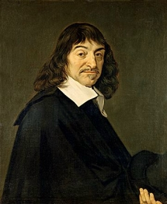
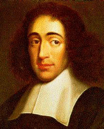
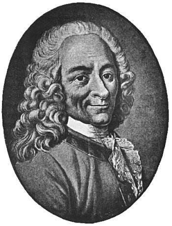
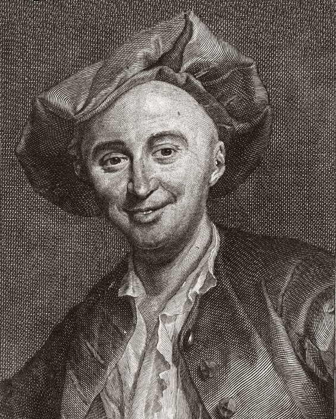
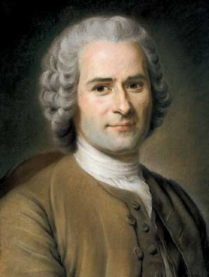
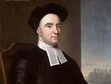
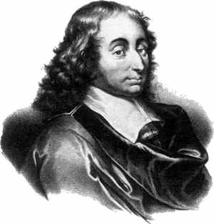

2) Aydınlanma: Bir Boşluğun Yaratılışı
‘Paris başpiskoposu en azından Tanrı’ya inanmalıdır.’
(Kral Louis XV, Lamenie de Brienne’nin Paris
başpiskoposu atanmasına karşı çıkma gerekçesi)
ydınlanma, 17. yüzyılda başlayıp 18. yüzyılın sonuna kadar devam eden bir felsefe hareketidir. Roma’nın yıkılmasından sonra Hristiyan inancı çerçevesinin dışına çıkan ilk bilimsel harekettir. Reformasyon, ortaya attığı felsefi ve dini düşüncenin mayası ile beraber Aydınlanma’nın neredeyse üç yüzyıl öncesinde ortaya çıkmıştır. Reformasyon’da Tanrı, Kilise Bildirgesi’nin bir unsuru, bir spekülasyon öğesi olmak yerine, yaşayan ve içinde bulundukları durumdan bağımsız olarak her bireyle ayrı ayrı ilgilenerek Kendi sözü aracılığla konuşan kişisel bir Varlık olarak açıklanmıştır. Yani, Aydınlanma’dan önceki yüzyıllar Tanrı’yı yeniden keşfetme dönemi olarak adlandırılabilir. (Bu konuyu bu kitabın 9. ve 10. bölümlerinde daha ayrıntılı olarak inceleyeceğiz.)
Reformasyon’dan çıkan Tanrı kavramı, dünyanın Kendi’sine karşı yeni bir ilgi göstermesine sebep olmuştur: Eğer Tanrı bu dünya ile bizzat ilgileniyorsa, Kendi benzeyişinde yarattıklarının ilgisine de layık olmalıdır! Dünya hakkındaki bu merak zaten Rönesans’la birlikte başlamıştı fakat Reformasyon bunun çok büyük ölçüde artmasına sebep oldu. Reformasyon çağının önde gelen bilim adamlarının büyük bir kısmı adanmış Hristiyanlardı.
Fakat dünyanın daha bilimsel bir açıdan incelenmesi birçok felsefi sorgulamaların ortaya çıkmasına neden oldu. Eğer bilim artık daha da fazla doğal olayı açıklayabiliyorsa, açıklanamaz olanı açıklaması için doğaüstü bir Varlığa olan gereksinim azalmış görünüyordu, ve bu varsayım da Aydınlanma düşünürlerinin Tanrı’ya ihtiyaç olup olmadığını sorgulamalarına neden oldu.
Aydınlanma çağının önde gelen filozofları olarak Marquis de Concernet, René Descartes, Robert Jacques Turgot, Jean-Jacques Rousseau ve Voltaire gibi Fransız düşünürleri ve kendileri İngiliz olan John Locke ve Hollandalı Yahudi Baruch Spinazo’yı sayabiliriz.
‘Akılcılık Çağı’ ya da ‘Rasyonalizm Çağı’ olarak da bilinen Aydınlanma dönemi gerçekten tanımlanması zor bir dönemdir. Fransız tarihçi Paul Hazard bu çağa ‘Evrensel Eleştiri Dönemi’ (Roorda 1986:203) adını vererek eleştirisel ve bilimsel araştırma yöntemlerinin giderek insanı ilgilendiren bütün araştırma dallarına yayıldığını anlatmak istemiştir. Denis Diderot ve Jean d’Alembert gibi felsefecilerin bilgileri düzenleyerek yayımlama girişimleri nedeniyle bu çağ ayrıca ‘Ansiklopedi Çağı’ olarak da nitelendirilir.
Felsefeciler evrendeki her şeyin belirli doğal kurallara göre işlediğini savundular. Bu kuralların ise dikkatli bir inceleme, deney ve aklın kullanımı aracılığıyla saptanabileceğini kabul ettiler. Doğal olarak da bu çağda fizik, matematik, ekonomi, kimya, anatomi ve astronomi de önemli ölçüde gelişme gösterdi. Galileo’nun cisimlerin devinimi kanunu ve İsaac Newton’un yerçekimi ve hareket kanunu gibi buluşlar matematiğin kullanılmasıyla açıklandı ve bu, filozofların –basitten, yani kabul edilmiş belirli gerçeklerden başlayarak nihayetinde mantıklı, evrensel doğrulara doğru ilerlemesi nedeniyle– sadece matematik aracılığıyla mutlak doğru sonuçlara ulaşılabileceğine inanmalarına neden oldu.
Birçok felsefeci bilimsel metodların insan doğasını ve teolojiyi incelerken de kullanılabileceğine inandı; böylece felsefe, politika, hukuk ve eğitim üzerinde araştırmalar yaptılar. Çoğu, Rus Büyük Catherina, Fransız XIV. Louis, İsveçli Kraliçe Christina ve Prusyalı Büyük Frederick gibi despotların yönetiminden hoşnut olsa da, cehalet, zorbalık ve sosyal adaletsizliğe karşı çıktılar. İnsanların, kendilerini duygularının ve batıl inançların değil ama aklın ve mantığın yönlendirmesine izin verdiklerinde kesin bir ilerleme kaydedilebilineceğini savundular. Pierre de Laclos’un Tehlikeli ilişkiler (Dangerous Liaisons) (1782) ve Marquis de Sade’nin Yatakodasında Felsefe (Philosophy in the Bedroom) (1795) gibi dönemin en çok satan eserleri geleneksel düşünceye meydan okudular.
Gerçekte, iki farklı Aydınlanma söz konusudur. İlki, yukarıda bahsettiğimiz küçük ama oldukça etkili olan, çoğunluğunu Fransız filozofların oluşturduğu gurubun başlattıkları Radikal Aydınlanma Fransız Devrimi, deizm, ateizm ve evrimin yolunu hazırlamıştır. Bir de çoğunlukla İngilizlerin başı çektiği Hristiyan Aydınlanması vardır. Bu ise, akıl ve esin arasında bir köprü kurmayı amaçladı. Hristiyan Aydınlanması da Batı Dünyası çapında gerçekleşen bir olgu haline geldi. Bu bölümde bazı radikal filozoflara, ve onların adım adım ateizme doğru nasıl yöneldiklerine bakacağız. Altıncı ve yedinci bölümlerde ise Hristiyan Aydınlanmasını inceleyeceğiz.
İlk olarak René Descartes’ı ele alalım. Descartes’ı ayrıntılı bir şekilde ele alacağız çünkü hem yaşadığı doğaüstü çağrı deneyimi, hem de Hristiyanlık ve Tanrı’yı bilgi kuramına katma çabaları modern felsefenin temellerini oluşturur.
A. René Descartes (1597-1650): Evrenin Mekanikleşmesi
René Descartes modern felsefenin babası olarak da bilinir. Felsefesinde bütün fiziksel değişimleri yönlendiren basit, evrensel madde ve hareket yasalarının çözümlenmesine ön ayak olmuştur.
Ücretli asker olarak görev yaparken Descartes kendisini çok büyük ölçüde motive eden bir tecrübe yaşamıştı. Bilginin yeniden düzenlenmesinin gerektiği yolları arıyordu ve–bir mimarın görkemli bir yapıyı bir kurul ile çalışmaktansa tek başına çok daha iyi tasarlayabilmesi gibi–tek bir bireyin böyle bir işi birkaç insanın bir arada çalışmasından çok daha iyi yürütebileceği sonucuna vardı. Descartes o gece korkunç bir rüya gördü. Güçlü rüzgârlar onu sokağa sürüklemişti, o rüzgârlarla boğuşurken çevresinde oldukça sakin insanlar vardı. Birden uyandı. Bu rüyanın yaptığı hatalara karşılık Tanrı’dan kendisine bir uyarı olduğuna inanan Descartes dua etmeye başladı. Yeniden uykuya daldı fakat büyük bir gök gürültüsü ve odasında parlayan ışık ile aniden uyandı. Gerçeğin ruhunun üzerine indiğine inandı. Üçüncü kez uykuya daldı ve bu sefer de bir sözlük ve şiir kitabıyla ilgili bir düş gördü. Düşünü, sözlüğün bilimi, şiir kitabının ise bilgeliği temsil ettiği şeklinde yorumladı. Ayrıca düşünde ‘Est et Non’ (Evet ve Hayır) sözcükleri de vardı ki bunlarının da gerçek ve yanlış olduklarını düşündü. Bu rüya Descartes’ı Tanrı’nın kendisini gerçek ve anlaşılabilir olanı, bilgiyi aramaya teşvik ettiği konusunda ikna etti (Descartes 1965:10). Hollanda’daki liberal sosyal atmosferin, özgür düşünceye karşı Fransız XIV. Louis’in mutlak yönetiminden daha hoşgörülü olması nedeniyle Hollanda’ya gitti ve yaşamının geri kalanını hemen hepsini orada geçirdi.
1637’de, Discourse on the Method for Conducting the Reason well and Seeking the Truth in the Sciences, together with Dioptrics, Meteors and Geometry, which are essays in this Method (Aklın Etkin Kullanımı ve Bilimde Gerçeği Dioptrics ışığın kırılmasını inceleyen bilim dalı, Yıldızbilimi ve Geometri denemelerinin ışığında aramak üzerine bir makale) adlı eserini yazmıştır. Genelde sadece The Discourse (Makale) olarak adlandırılan bu çalışma Descartes’in gerçeğe ulaşma tekniklerinden bahseder ve Tanrı’nın doğal felsefeyle ilişkisini tartışır.
Bu kapsamlı bilgiye ulaşmayı amaçlarken Descartes başka hiçbir düşünürün henüz elde etmediğini düşündüğü bir kesinliğe varmayı hedeflemişti. Bilgiyi sağlam temellere dayandırmak istiyordu, bu nedenle bütün fikirlerini sorgulayarak ilerledi. Sadece geometri ve aritmetiğin onu aradığı kesinliğe ulaştırabileceğini düşündüğü için onları model olarak kullanmaya karar verdi. Başka bir deyişle Descartes her şeyin nedeninin basit, belirli, ayırdedici, kabul edilmiş sorgulanması mümkün olmayan temel ilkelere ulaştığımız bir tümdengelim yöntemiyle saptanabileceği bir düşünce sistemi kurmayı amaçladı ve bu sürece ‘evrensel matematik’ adını koydu. Kabul edilmiş bu gerçekler sıradan her insanın sezgisel olarak farkına varabileceği şeyler olmalıydı. Örneğin her insan sezgisel olarak, üçgenlerin üç kenara ve dairelerin ise yanlızca bir adet yüzeye sahip olduklarını bilir.
Böylece, bir harabenin yerine yeni bir yapı yapılabilmesi için, kökünden yıkılması gerektiği gibi, Descartes her şeyden şüphe duyma yolunu izledi. Bu ise Descartes’ın, kuşkuculuğun kendisinden kaynaklandığını anlamasına neden oldu. Düşünceleri onu aldatsa bile, kendisinin gerçekten düşündüğünü inkâr etmek olanaksızdı–kendisi düşünen bir varlıktı. Cogito ergo sum! ‘Düşünüyorum, o halde varım’ formülü Descartes’in temel ilkelerinden ilki haline geldi (Descartes 1965:26). Neticede her insan sezgisel olarak var olduğunu ve düşündüğünü bilirdi.
Bazen yansıttıkları bilginin aldatıcı olabilmesi nedeniyle Descartes’ın duyulara karşı çok az inancı vardı. Örneğin uzak mesafeden yuvarlakmış gibi görünen bir kule yakından incelendiğinde kare olabilir. Ya da, Descartes’ın en ünlü örneğini ele alırsak, uzuvlarından biri kesilmiş bir kimse yerinde olmayan ekleminin acısını hissedebilir. Fakat bu duyular bazen aldatıcı olsa da, Descartes onların yine de gerekli olduğunun farkındaydı. Duyular olmadan doğada hangi nesnelerin ya da olguların bulunduğunu tayin edemezsiniz. Örneğin doğuştan kör olan birinde renk kavramı bulunmaz, ya da bir mıknatısın işlevini görmediğinizde, o nesnenin özelliklerini de saptayamazsınız.
Descartes bütün doğal olguların madde ve hareketin mekanik ilkeler temelinde açıklanabileceğini savundu. Evrenin işleyişini–manyetizmayı, gökcisimlerinin oluşumunu, ışığı, yaşamın kendisini bile–mekanik bir temelde, yani bütünüyle madde ve hareket ile ilgili açıklamalarla tanımlamak için büyük bir çaba içerisine girdi. Birtakım doğal olgular ile ilgili daha sonraları birçok kuramı çürütülse de, kainatın büyük ve karmaşık bir makina olduğu düşüncesi 18. yüzyıl bilimine hakim olan bir teoriydi.
Descartes inanç konusunun zihinsel bir sorgulamanın dışında olduğunu savunuyordu:
Teolojimize saygı duydum ve cennete gidecek herhangi biri kadar çok arzu ettim, fakat bu konuda ikna oldum ve anladım ki, bu yol en cahil insana en bilgilisinden daha az açıklanmış değildir. Bizi cennete götürecek olan açıklanmış gerçekler bizim kavrayışımızı aşan şeylerdir, onları aklımın yetersizliğiyle değerlendiremem. Ve o örnekleri anlayabilmem için insan üstü, göksel bir yardıma ihtiyacım olduğunu düşünüyorum
(Descartes 1965:7, 9).
Descartes teolojinin doğa gibi bir gerçekliğe sahip olduğunu inkâr etmedi. Bunun yerine, teolojinin, cennete girmeye hak kazanmak için kabul edilmesi gereken, tanrısal esin ile açıklanmış kavrayışı aşan doktrinlerden oluşması nedeniyle, felsefenin çalışma alanına girmediğini savundu. Bu, Tanrı’nın felsefenin tamamen dışında tutulduğu anlamına gelmiyordu. Tanrı’nın, yaratılışı, yazılı esininden (Kutsal Kitap’tan) farklı olarak analiz edilebilirdi, ve bu ilke insanın Yaratıcısı ile ilgili temel bilgiye sahip olmasını sağlardı.
Descartes düşünce yaşamının ruhuna ait olduğunu ve bu nedenle herhangi bir maddesellikten uzak olduğunu kabul etti. Bu ise, beden ve ruhun farklı varlıklar olması nedeniyle, Descartes’in düşünce yaşamının bedeninden sonra da yaşayacağı anlamına geliyordu. Descartes’in ilk ilkelerinin güvenilirliğinin Tanrı’da köklenmiş olmalarından kaynaklandığına inanması onun Tanrı kavramına bağlı kalmak zorunda olduğunu gösteriyordu. ‘Açıkça ve kolayca kavrayabildiğimiz şeylerin hepsinin doğru olduğu kuralı sadece Tanrı’nın kimliği, varlığı, mükemmel bir varlık oluşu ve sahip olduğumuz her şeyin O’ndan gelmesi temelinde kanıtlanabilir’ (Descartes 1965:31). Descartes’e göre Tanrı, bilginin kesinliğinin en önemli kanıtıydı, bu nedenle ilk ilkeleri Tanrı’yla ilgili olmuştur. Bu ise Tanrı’ya epistemolojik (bilgi kuramı) bir gereksinim olduğunu gösterir. Varlığının kanıtlanması önemli değildi, Descartes Tanrı’nın varlığının matematik kadar açık olduğunu düşünüyordu. İnsan Tanrı’nın varlığından sadece duyularından elde ettiği bilgiye dayandığında şüphe duymaya başlardı.
Descartes Tanrı’ya inandı çünkü Tanrı ile ilgili Tanrı’nın kendisinden gelmiş olması gereken kesin ve açık düşüncelere sahipti. Tanrı’nın varoluşuna ilişkin Anselm’in ‘ontolojik’ savını benimseyen Descartes, şüpheciliği kendisinin bir insan, yani kusurlu olduğunu gösterse de, mükemmel olanı algılayabilmesinin Tanrı’nın var olduğu anlamına geldiğini öne sürdü, çünkü Tanrı tamamen mükemmel olandı. Dahası, Tanrı tamamen mükemmel olduğu için insanı aldatmazdı, bu da insanın Tanrı hakkında sezgisel olarak kavradığı şeylerin Tanrı’dan geldiği anlamına geliyordu. Sonuç olarak insanın Tanrı’nın varlığına ilişkin bilgisi doğru olmalıydı. Bu biraz dolaylı bir mantık gibi görünse de, Descartes hayattayken bile kendisinin bu nedenle suçlanıyor olduğu da bilinmelidir.
Sonuç olarak Descartes Tanrı’nın maddeyi yoktan yarattığını ve hareket yasaları koyduğunu dile getirdi. Aksi takdirde Tanrı’nın mükemmel olduğu düşünülemezdi, Tanrı’nın mükemmelliği değişmez olduğu anlamına gelirdi, bu ise karşılığında dünyadaki bütün hareketin de değişmediğini anlatıyordu. Eğer kainattaki hareketin ya da enerjinin miktarı sabit değilse, Tanrı’nın eylemleri de sabit olmuş olamazdı, bu da Tanrı’nın değişken olduğu anlamına gelirdi. Tabi ki her bir maddenin ayrı hareket seviyeleri vardı ama Descartes’e göre bu hareketin toplam miktarı yaratılıştan beri değişmemişti.
Tanrı’ya epistemolojik bir açıdan yaklaşan bir filozofun kilise tarafından el üstünde tutulacağı düşünülse de, gerçek şu ki, Descartes’in bütün çalışmaları görünürde, yasaklanmış kitapların arasındaydı. Hollanda Leyden Üniversitesi onun öğretişlerini yasaklamıştı ve kendisi muhafazakâr bir teolog olan Voetius, Utrecht Üniversitesi’ni de aynı şeyi yapmaya ikna etmişti. Fransa’da, teologlar ve Aristo yanlısı düşünürler kralı ve parlementoyu Descartes’in fikirlerinin (Kartezyenizm) halkın refahına bir tehdit olduğuna ikna ettiler, bu da Descartes’in öğretilerinin Fransız üniversitelerinde okutulmasının da yasaklanmasına neden oldu.
Bu kadar çok suçlamaya maruz kalmasının nedeni Descartes’in açıkça İncil’e aykırı birçok şey öğretmesiydi. İncil’deki yaratılış hikâyesini tamamen kabul etmiyordu, dünyanın bir kaostan yaratıldığını kabul etmesine rağmen Tanrı’nın ışığın kendisini, ışık saçan gökcisimlerini yaratmadan önce yarattığına inanmakta güçlük çekiyordu. Ayrıca, yaratılışta hiçbir gelişim aşaması olmadığına, yani her şeyin yaratıldıkları anda tam, tamamlanmış, gerçek ve mükemmel olduklarına da inanamıyordu.
Muhafazakâr çağdaşlarını rahatsız eden başka bir konu ise, Descartes’in asıl nedenler üzerinde durmamasıydı. ‘Neden’ sorusunu sormak yerine ‘Nasıl’ sorusuyla kendini sınırlandırmış olmasıydı. Bu çok önemli bir farktır, çünkü felsefenin asıl amacı ‘neden’ sorusunu sormaktır, ‘nasıl’ sorusunu soran ise bilimdir. Daha sonra da göreceğimiz gibi, bilimdeki gelişmeler, bir noktada teolojinin ‘neden’ sorusunu gereksiz kıldı. Sorunun değişmesi Descartes’in felsefesini, ‘neden’ sorusuna odaklanan Aristoteles’inkinden farklı kılarak, evren meselesinin mekanik bir olgu olarak kısıtlanmasına neden oldu. (‘Neden bir elma ağaçtan düşer?’ Aristoteles: ‘Çünkü karada bulunan bir nesne olması nedeniyle evrendeki uygun yerini arar.’) Hristiyan camiası için Aristoteles’in amaçlanmış yaratılış teorisi, Descartes’in maddenin gelişi güzel hareket etmesi ilkesinden çok daha kabul gören bir düşünce oldu. Descartes’in fikirleri daha sonra Spinoza tarafından daha da geliştirildi.
B. Baruch (veya Benedictus) Spinoza (1632-1677): Felsefenin Teolojiyi Gölgede Bırakması
O dönemde çok az düşünüre Baruch Spinoza gibi iftira edilmiştir. Fakat bu iftiralar Spinoza’nın radikal Aydınlanma’nın kilit isimlerinden biri olmasını engelleyemedi. İncil eleştirileri, dini törenleri reddetmesi, aklın temel alınması konusunda ısrarı ve panteizmi 18. yüzyıl düşünürlerini büyük ölçüde etkiledi.
Spinoza, 16. yüzyılda Amsterdam’a yerleşen Portekizli Yahudi bir ailenin çocuğuydu. İyi yetişmiş bir haham idi, fakat yerel Yahudi halkıyla olan anlaşmazlığı kendisinin sinagogta öğretmesini engelledi; 1656 senesinde aforoz bile edildi. Oldukça bağımsız bir yapıya sahipti, Fransa Kralı XVI. Louis’in, kendisine emekli aylığı bağlatma teklifini geri çevirdi; Almanya’da Üniversite profesörlüğünü de reddetti. Hayatını mercek imal ederek kazanıyordu, bunun içindir ki zamanından önce gerçekleşen ölümünün çalışırken ciğerlerine kaçan cam tozu nedeniyle olduğu düşünülmüştür.
Spinoza, René Descartes’in felsefesinden ciddi ölçüde etkilenmiştir. Descartes’in gerçekliğin bölümlerinin düşünceden ve neden sonuç ilkeleri doğrultusunda etkileşen maddeden oluştuğu düşüncesini benimsemiştir. Fakat, başyapıtı olan Etik’de Spinoza’nın fikirlerini oldukça alışılmamış yönlerde geliştirmiştir. Örneğin var olan tek maddenin ‘Tanrı ya da Doğa’ (Spinoza 1909: Part I, Prop. VIII, note 2) olduğunu ele almıştır. İki gerçekliği, düşünce ve maddeyi Tanrı’nın sınırsız, insan aklı ve bedeni gibi, sınırlı şeylerin ise Tanrı’nın sınırlı nitelikleri olduğunu düşünmüştü. Nedensellik ilkelerinin kabulünü şartsız savunduğu için, sadece insanın özgür iradeye sahip olabileceğini reddetmekle kalmamış, Tanrı’nın da özgür iradeye sahip olmadığını savunmuştur (:Part I, Prop XVIII). Bu şekilde düşünerek ‘neden’ sorusunun daha da gereksiz olmasını sağlamıştır, çünkü Tanrı’yı nedensellik ve akıl süzgecinden geçirerek, Tanrısal esinin gerekmediği sonucuna ulaşmıştır. Bu düşünce, doğal olarak onu panteizme yöneltmiştir. Spinoza, ‘Tanrı her yerde, her zaman var olandır ve her şeyin geçici nedeni değildir’ diyordu (:Part IV). O’na göre doğa ‘başka bir isimle anılan Tanrı’nın gücüydü.’ Böyle olduğu için de mucizeler gerçekleşmesi mümkün olmayan şeylerdi, çünkü Tanrı’nın kendisiyle ters düşmesi mantıksız olurdu. Spinoza, özgürlüğün bir kimsenin doğadaki yerini anlamasında ve kendisini, özellikle duygularını ve tutkularını doğaya tabi tutmasında yattığını düşündü.
Spinoza sadece akla dayanarak, Kutsal Kitap’ı yorumlamaya başladı. Açık bir şekilde anlaşılır olmadığı takdirde bir metnin güvenilir olmadığı düşüncesinden yola çıktı. ‘En yüksek Kutsal Kitap yorumlama gücü her insanda bulunabileceğinden, böyle bir yorum için gereken kural herhangi bir doğaüstü ışık ya da harici bir otorite değil ama herkesde bulunan aklın doğal ışığından başka bir şey değildir’ (Spinoza 1909:119). Spinoza doğrulara yanlızca hayal gücünün akla hakim olmasına izin verilmediği takdirde ulaşılabileceğini savundu. ‘Bu kötülüklere, insana aklı ve doğayı küçümsemeyi öğreten hurafeleri de eklemeliyiz… en derin sırların Kutsal Kitap’ta gizli olduğuna inanıyorlar, ve kendilerini bu saçmalıkları araştırmak için yoruyorlar, işe yarar olanı ihmal ediyorlar.’ (:99)
Bu yaklaşım, Spinoza’nın Kutsal Kitap’ın çeşitli bölümlerinin kabul edilmeye değer olmadığı sonucuna varmasına neden oldu. Örneğin, peygamberler doğal ya da ruhsal doğrulardan yoksun, kuvvetli bir hayal gücüne sahip kişilerken, en hikmetli insan olan fakat peygamberlik armağanına sahip olmayan Süleyman’ın eserleri ise dikkate alınmaya değerdi.
Spinoza gerçeğe varmak için sivri bir zekâya sahip olunması gerektiğini düşündü, çünkü bir kimse buna sadece uzun ve titiz bir mantıksal sürecin sonucunda ulaşabilirdi. Bu, gerçeğin genelde insan kavrayışının dışında olduğu anlamına gelirdi. Çünkü, çoğu insanın açık, mantıklı ve kolay anlaşılır bir düşünceye sahip olması mümkün değildi. Kutsal Kitap’ın sadece zeki olan bir azınlığa değil ama bütün insanlığa hitap ediyor olması nedeniyle, bu muhtemelen mantıklı bir kitap olamazdı. Zeki olan bu azınlık Kutsal Kitap’ı reddetmekte özgürdü, çünkü Tanrı’yı sadece zihinsel süreçlerle tanıyabilirlerdi ve böylelikle tamamen daha da fazla bereketlenmiş olurlardı, çünkü sadece korktukları değil ama anlayabildikleri bir Tanrı’yı sevebilirlerdi. Sahip oldukları Tanrı bilgisi, mantığa ve gerçekliği kanıtlanabilir düşüncelere dayalı olurdu.
Spinoza felsefe ve teolojiyi birbirinden ayırdı ya da Tanrı’yı felsefeye tabi tuttu. O zamana kadar gerçekte felsefe teolojinin bir alt dalı iken¸ Spinoza ile teoloji felsefenin bir alt dalı oldu. Spinoza’ya göre teolojinin ilgi alanı kişisel dindarlıkla sınırlıyken, felsefe ve bilim doğrulara ulaşmamızı sağlardı (en azından, ‘nasıl’ sorusunu sorarak nedensellik zinciriyle sınırlandırılan Spinoza’nın doğru tanımına göre). Ona göre Kutsal Kitap ve aklın ortak hiçbir noktası olmadığı için, Kutsal Kitap’taki doğal dünya ile ilgili güvenilir bilimsel bilgiye ulaşmanın imkânsız olması gibi, Kutsal Yazılar’ın doğruluğunu kanıtlamak da imkânsızdı.
C. Voltaire (1694-1778): Deizm
Voltaire, Fransız François Marie Arouet’in takma adıydı. Voltaire oldukça yetenekli bir nükteciydi, birçok hiciv kaleme aldı. 1717’de devleti alaya alan bir şiirinden dolayı ünlü hapishane Bastille’de yatarken Oedipe adlı trajedisini tamamlamıştır. Bu trajedinin getirdiği başarıyla beraber, Voltaire’in yazdığı elliden fazla eseri, ününün büyük bir oyun yazarı olarak yayılmasına neden oldu. Fakat 1726’da, mevki sahibi bir asilzadenin onurunu kırdığı gerekçesiyle üzerine düşen bedeli ödemek zorunda kaldı. Birkaç gün sonra ya hapis yatmak ya da sürgüne yollanmak arasında bir seçim yapması gerekti. İkincisini seçti ve İngiltere’ye gitti.
İngiltere’de 1726’dan 1729’a kadar geçirdiği seneler, Voltaire üzerinde güçlü etkiler bıraktı. İngiltere’ye bir şair olarak gittiği ve filozof olarak döndüğü söylenir. John Locke’un deneysel felsefesi (Ampirizm) ve bilim adamı İsaac Newton’un çalışması onu derinden etkilemiştir. Dahası, İngiliz hükümetinin önde gelen aydınlara zulüm etmemesi Voltaire için iyi olmuştu. İngiliz aydınları, saygınlıklarını yitirmelerine ya da kitaplarının yakılmasına rağmen yine de en azından düşünceleri yüzünden hapse atılmıyorlardı. Kısaca Voltaire İngiliz hayranı oldu.
Fransa’ya döndükten sonra, İngiliz geleneklerini, özgürlüklerini ve düşünce tarzlarını övdüğü İngiliz Ulusuyla İlgili Mektuplar’ı (Letters Concerning the English Nation) yazdı. Fransız yetkililer eserin Fransa’yı dolaylı yoldan eleştirdiği sonucuna vardılar. Voltaire tekrar kaçmak zorunda kaldı, Cenevre’ye gitti. 1759 senesinde Fransa-İsviçre sınırında Ferney adında bir malikâne satın aldı; ölümüne kadar orada yaşayarak çalışmalarını sürdürdü. Voltaire, malikânesinde deneyimsiz genç bir adamın maceralarını anlatırken bir yandan da iyi ve kötünün doğasını inceleyen en ünlü eseri Candide’in de aralarında bulunduğu birçok önemli kitap, risale, oyun, ve mektup yazdı.
Voltaire ‘herşeyi kendi özgür isteğiyle düzenleyen, her şeyi yaratan bir Tanrı’ya’ inanıyordu, fakat bununla birlikte Hristiyanlığı kabul etmedi. Genel olarak dinin, özellikle de Katolik Kilisesi’nin yanlış taraflarını açığa vurmak Voltaire için bir tutku haline gelmişti. Spinoza gibi, o da Kutsal Kitap’ın yetkisine dayansa bile akla ters düşen her türlü doktrinin yanlış olduğunu savunuyordu. Açıkca savunduğu anti-Hristiyan görüşlerinin yanında aynı zamanda açıkça ateizmi de eleştiriyordu. Voltaire’e göre ateizm, ‘görünürde iğrenç ve matematiksel olarak imkânsız’ şeyleri kabul etmeyenleri cehennem ateşinde cezalandıran ‘barbar bir Tanrı’nın olduğunu iddia eden fanatiklere karşı sadece bir tepkiydi.
Ateizm kötü bir şeydi fakat, Voltaire dinsel fanatizmin ‘yüz kez daha fazla korkulması gereken’ bir şey olduğunu düşündü. Aşırı dincilik, Voltaire’in öfkesini en etkili biçimlerde anlattığı şeylerin başında geldi. Ona göre ateistler en azından kendi akıllarını kullanıyorlardı ve barış içinde yaşıyorlardı. Diğer yandan fanatik dinciler, hayal güçlerinin ve tutkularının onları çeşitli belalara sürüklemesine izin veriyorlardı:
Daha az batıl inanç, daha az fanatizm, daha az felaket.
Ateist bir toplumun var olabileceğini iddia edenler doğrudur, çünkü bir toplumu oluşturan kurallardır ve aynı zamanda da birer düşünür olan bu ateistler, bu gibi kurallar altında çok mutlu ve hikmetli bir yaşam sürebilirler.
Ateizm ve fanatizm toplumu bölebilecek iki canavardır fakat bir ateist aklını kullanırken, -ki bu onun yanlışa yönelmesini engeller-, bir fanatik ise sürekli onu kışkırtan bir çılgınlığın etkisi altındadır
(Voltaire: 165).
Eğer Voltaire bir Hristiyan ya da bir ateist değilse, o halde neydi? Voltaire bir deistti. Deistler doğayı akıllı bir varlığın (Tanrı) tasarladığını savunurlar. Bu, doğanın düzenli işleyişini etkilemeyen bir tasarımdı ve bir yaratıcının varlığını kanıtlıyordu. Tanrı maddeyi yaratmıştı ve Kendi orijinal planının gerçekleşmesini sağlayan kurallara göre işlemesini sağlamıştı. Başka bir deyişle; ne olursa olsun doğa Tanrı’nın planladığı mükemmelliğe doğru, kendi değişmez, belirli düzenini takip ediyordu. Tanrı’nın kendi yaratışını devam ettirmesine gerek yoktu. Çünkü Tanrı dünyayı insan ırkının yaşamasına uygun doğal bir ortam olarak yaratmıştı, ve esaslı değişimlere gerek yoktu. Bu ilahi egemenlik kuralları doğada sabit ve değişmez olduğu anlamına geliyordu.
Jeolojik afetler, mucizeler ya da tarihsel olaylar, deistlerin dünya anlayışıyla pek uyuşmuyordu, çünkü bu gibi olaylar orijinal yaratılışın kusurlu olduğu izlenimini veriyordu. Deistler de dünyanın mükemmel olarak yaratıldığı öğretisini tam olarak savunmuyorlardı, ardından meydana gelen bir olay (günahın sonucundaki düşüş) bunu bozmuştu.
Kendisi de bir deist olan Voltaire, Candide’deki ‘mümkün olan en iyi dünya’da yaşadıklarını savunan Deist teologlara karşı çıktı. 1755 Lizbon depremiyle gelen yıkıma işaret ederek, dünyanın dünya kalmasına müdahale etmemenin (ya da Tanrı’nın Tanrı olmasına) ve bireyin kendi küçük bahçesine çekilmesine izin vermenin en iyi şey olduğu sonucuna vardı.
Deizmin ayrıca daha çok İncil’e bağlı Hristiyanlar’a hitap eden, yarıdeizm olarak adlandırılan başka bir biçimi daha vardı. Bu düşünce, Tanrı’nın dünyayı yarattığını ve dünya kendi ‘doğal düzeninde’ işlemeye devam ederken onu desteklediğini öğretiyordu, fakat bazen de doğaüstü bir şekilde müdahale ediyordu. Hem yaratılış tasarısında, hem de ‘doğaüstü’ ve ‘büyük felaket’ cinsinden olaylar aracılığıyla doğanın işleyişine yapılan ilahî müdahalelerde Tanrı’nın etkinliği açıkça bellidir. Daha sonra göreceğimiz gibi yarıdeizm ile ilgili sorun, bilimsel teori geliştikçe ve bilimsel buluşlar çoğaldıkça, tanrısal müdahalenin kesinliği ve zamanı ile ilgili iddiaların sürekli gözden geçirilmesinin zorunlu hale gelmesiydi. Bazı olayların mantıksal bir açıklaması bulunamadığında her zaman bu düşünceye başvurulur olmuştu. Böylece her yeni bilimsel gelişme, Tanrı’nın kabul edilmiş yetkisini sarsıyordu.
Yarıdeizm Tanrı’nın dünyayı ellerinde tutarak desteklediği yönündeki kabul edilmiş Hristiyan görüşünden farklıydı. Örneğin Reform öğretisini savunan teolog John Calvin Tanrı’nın dünyaya, sadece düzenli bir şekilde işlemesi için değil ama aynı zamanda günahkârlara doğaüstü bir şekilde cennetin yolunu açmak için de müdahale ettiğini öne sürdü. Diğer bir deyişle, Tanrı müdahale eder ve Kutsal Ruh’un insanların yüreklerinde çalışmasıyla seçilmiş bireylerin sonsuz refahı için bunu yapmaya devam eder. Bu bireylerin çeşitli belalara maruz kaldıklarında ‘kendi küçük bahçelerine çekilmelerine’ gerek yoktur, fakat sayısız amaçlarını seçilmişlerinin ebedi mutlulukları için gerçekleştiren kişisel bir Tanrı’nın varlığından ötürü iman aracılığıyla güven içinde olabilirler.
Bu nedenle Voltaire ile geleneksel Hristiyanlık arasındaki fark, ikincisinin kişisel, diri ve işleyen, çalışan bir Tanrı’ya inanmasıydı. Aydınlanma’nın ‘neden’ sorusunu geçersiz kılması Tanrı’nın kişisel bir varlık olma özelliğini kaybetmesine neden oldu. Eğer Tanrı benim yaşamımla ilgilenmiyorsa ve hiçbir şekilde hayatıma müdahale etmiyorsa, şunun ya da bunun bana neden olduğunu sormanın da bir anlamı yoktu. Tanrı’yı akıl aracılığıyla değerlendirme düşüncesi kabul edildiği için, artık Tanrı kişisel bir Tanrı olmaktan çıkıp, akla boyun eğmek zorunda kalmıştı. Skolastisizm Aristotle’nin kişisel olmayan Tanrı düşüncesine karşı uygun bir yanıt veremeyince, Aydınlanma mantığı daha ileriye gidemedi.
Voltaire’in ölümüyle, Roma Katolik Kilisesi onun kiliseye ait topraklara gömülmesine karşı çıktı. Fakat 1791’de cenazesi Paris’te, Pantheon’a götürüldü ve orada diğer Fransız ünlülerinin yanına gömüldü.
D. John Toland (1670-1722): Mucizelerden Sıyrılan Din
En önde gelen deistlerden biri oldukça eleştiri alan Gizemli Olmayan Hristiyanlık’ın (“Christianity not Mysterious”) yazarı John Toland’dı. Fransız deizmi gibi İngiliz radikal deizmi de Hristiyanlığı ‘esin’in dışında değerlendirmeyi ve tamamen akla dayalı bir öğretiler bütünlüğü oluşturmayı amaçladı. Muhafazakâr Hristiyan çevrelerin öfkesini uyandıran Toland’ın bu kitabı, sadece savunduğu özgün fikirler açısından değil ama karşı çıktığı fikirlere olan sertliğiyle de oldukça önemli bir yapıttır. Toland bir zamanlar Hristiyanlığın akılcı bir inanç olduğunu fakat 2. yüzyılda rahiplerin Hristiyanlığa putperest ayinlerini, gizemlerini katarak ve kendilerini Tanrı ile insan arasında bir arabulucu konumunda göstererek bu inancı yozlaştırdıklarını iddia etti. Üyeliğe kabul törenleri, çarmıh işareti, tasvirler, sunaklar, müzik, oruç, kilise içindeki hiyerarşi, zenginlik ve ihtişam, başlangıçta saf ve basit olan Hristiyan dininin yerini aldı. Bu gibi uygulamalarla Hristiyanlık putperestliğe doğru yozlaştı. İnsanlar sersemletici törenleriyle anlaşılmaz olana tapınmayı öğreten rahiplerin boyunduruğu altındaydılar.
Toland’a göre bu sorunun çözümü, aklı kullanarak Hristiyanlığı putperest gizemlerinden arındırmakta yatıyordu. Rahipleri, törenleri, batıl inançları ve Hristiyan öğretisinin anlaşılması imkânsız olarak nitelendirilen kısımlarını reddetti. Mucizeler gerçekleşmesi mümkün ve anlaşılır olmalıydı, çünkü Tanrı sadece gerçekleşmesi mümkün olan şeyleri yapabilirdi, sonuç olarak O bile bir kareyi aynı anda bir çember yapamazdı! Mucizeler, Tanrı’nın, doğa kanunlarına göre sıra dışı, fakat gerçekleşmesi mümkün olan eylemleridir. Üçlübirlik (tekteüçlük) öğretisine de saldırılar gelmeye başladı–birin içerisindeki üç düşüncesi nasıl gerçek olabilirdi? Mesih’in dirilişi ise doğa kurallarına ters düştüğü için sorgulanıyordu; bu, İsa’nın öğrencilerinin uydurduğu bir aldatmaca olmalıydı.
Diğer İngiliz radikal deistler de Kutsal Yazları anlamak için gereken anahtarın akıl olduğunu savundular (Erdman 1891:153-154). Bu hususta Toland, Voltaire ve diğerleri kilisenin gücünü ve yetkisini sarsabilmek için her şeyden önce aklı kullanmışlardır. Bazı yönlerden bu çabaları aklın yararına olmaktan çok, kiliseye zarar vermekte başarılı olmuştur!
E. Julian Offray de La Mettrie (1709-1751): Materyalizme Doğru
Julien Offray de La Mettrie Hollanda’da Leyden Üniversitesinde tıp eğitimi almış Fransız bir doktordu. 1747’de Hollanda’da, kendi ismini kullanmadan İnsan Makinası (“L’Homme Machine”) adlı kitabını yayınladı. Kitap savunduğu katı Materyalizm’den ötürü kısa sürede skandala neden oldu. Sadece Fransa’da değil, çok daha açık fikirli bir yer olan Leyden’de de yasaklandı.
De La Mettrie bu kadar çok fırtına yarattı çünkü ilk kez bu kitapta birileri insanın bir makinadan farksız olduğunu açıkça ifade etmişti. Bu, Descartes’in mekanizmini şaşırtıcı ve kaçınılmaz bir şekilde, zihinsel olgunun da içinde bulunduğu evrendeki her şeyin, maddesel kaynaklardan geldiğini savunan Materyalizm’e doğru götürmüştür.
Maddeciler’e (Materyalistler’e) göre insan ruhunu ya da ruhsal olarak düşünebilme yetisini açıklamaya gerek yoktu. İnsan sadece bir beden ve bir beyinden oluşurdu, zihni bile mekanik olarak işlerdi. Düşünme, hissetme, insanların doğru ya da yanlış yargıları, müzikten zevk alması, renkleri ayırdedebilme yeteneği–kısacası bütün deneyimi–madde ve hareket özellikleri ile açıklanabilirdi. Bu demek oluyordu ki, insan oldukça karmaşık bir makinaydı. İnsan ile ilgili her şey doğa kanunları ya da ilahî kurallar gibi kabul edilmiş gerçekler temelinde açıklanabilirdi. Peki bu nasıl açıklanabilir? ‘Neden’ sorusu sorulmamakla, çünkü herşey ‘Nasıl’ sorusuyla sınırlandırılmalıydı. ‘Nasıl’ sorusu doğrulara ulaşmayı amaçlarken ‘Neden’ sorusu ise batıl inancı ilgilendiren alana girerdi.
De La Mettrie ruhsal bir varlığı ve planlanmış bir yaratılışı reddetti. Geleneksel olarak, insan doğa ile ilgili şeyleri anlayamadığında açıklamak için Tanrı’ya sığınırdı. Sonraki kitabı Systeme d’Epicure’de (1750), insanoğlununkini de kapsayan yaşamın kaynağının havadaki tohumlardan gelebileceği varsayımını ileri sürdü. O’na göre teologların ölümden sonra ruha ne olduğu ile ilgili iddiaları her hangi bir temele dayanmıyordu. Çünkü savundukları bilgi, insan bedeni mekanizmasının incelenmesine dayanmıyordu (Erdman 1891:165-166).
F. Baron d’Holbach (1723-1789): Materyalizm’den Ateizme
Yaşamının büyük bir kısmını Paris’teki düşünürler arasında geçirmiş olan Alman Baron d’Holbach (1723-89) Doğa Sistemi (“Systeme de La Nature”) adlı eserini yayınladı. Diğer Aydınlanma dönemi eserlerinde olduğu gibi bu kitapta da d’Holbach yargıların akla dayandırılması gerektiğini savundu; önyargı gerçeğin düşmanıydı. Diğer filozoflar gibi o da dini, insanları aklın yolundan saptırarak batıl inançların ve hayal gücünün labirentine yönlendirmekle suçladı. Birşeyin doğal nedeni bilinmese bile, d’Holbach doğaüstü nedenlerin öne sürülmemesi gerektiğini savundu, çünkü bu, bilimin ilerlemesini engellerdi.
D’Holbach bütün doğal olayların; her sonucunun, kendisinden önce gelen belirli nedeninin de içinde bulunduğu katı bir deterministik (belirlenimci) düzenin parçası olduğunu savundu. Doğa, hareket halindeki maddeyi idare eden değişmez kurallara göre işleyen nedenler ve sonuçlar zincirinden başka birşey değildi. Yaratılış inancının akla ters düştüğünü savundu çünkü ‘hiçlikten bir hiçlik yaratılabilirdi’. Madde sonsuzdu. Başlangıcı yoktu.
Bu nedenle d’Holbach’ın ateizmi Tanrı ve doğanın tamamen birbirinden ayrılmasından ibaretti. Aralarında hiçbir etkileşim yoktu, insan sadece doğanın bir parçasıydı. İnsan ile Tanrı’nın ortak hiçbir şeyi olmadığına göre, Tanrı’nın var olup olmadığı da önemli değildi (Erdman 1891: 166-169).
D’Holbach’ın kitabı savunduğu fikirler itibariyle tamamen yeni bir yapıt olmasa da, bu fikirleri oldukça aşırı uçlarda savunduğu için diğer Aydınlanma dönemi eserlerinden çok daha fazla ilgi çekti, Tanrı’yı doğanın dışında bırakıyordu. Tanrı’yı doğadan ayrı değerlendirmek, –uygulamada küçük bir farkla–O’nun varlığını inkâr etmekle tamamen aynı olmasa da hem Hristiyanlar, hem de Deistler bu kitabı “Ateizmin İncil’i” olarak nitelendirdiler. D’Holbach’ın Tanrı kavramı insandan uzaktı: ‘Öyleyse bırakalım insan neşeyle ziyafete otursun, ve halinden hoşnut bir şekilde bulduklarını yiyip içsin ama yararsız dualarıyla Tanrı’yı rahatsız etmesin.’
Felsefenin teolojiye egemen olması ve Tanrı’nın yaradılışın dışında tutulması tek bir mantıksal sonucu ortaya çıkardı: Ateizm.
G. Jean-Jacques Rousseau (1712-1778): Romantizm Dini
Jean-Jacques Rousseau birçok yönden yetenekli, bilmece gibi biriydi. Kendisi sırasıyla önce Protestan iken daha sonra Katolik, en sonunda ise deistti. Aynı zamanda bir filozof, sosyopolitik kuramcı, bir müzisyen, botanikçi ve Aydınlanma döneminin en iyi yazarlarından biriydi. Bireyin değerini ve saygınlığını vurgulaması, bireysel hakları çok etkili bir şekilde savunması, ve çağdaş ‘modern’ eğitim teorilerine rağmen, aynı Rousseau gayri meşru beş çocuğunu yetimhaneye bırakarak terk etti.
İnsanlar Arasındaki Eşitsizliğin Kaynağı Üzerine bir Makale (“Discourse on the Origin of Inequality Among Mankind”) adlı eserinde bilimin, sanatın ve sosyal kurumların insanı yozlaştırdığını ve doğal, ya da ilkel bir devlet sisteminin uygar toplumdan ahlaken çok daha üstün olduğunu öne sürerek naturalizmin temellerini oluşturmaya başladı. Ünlü siyasi incelemesi Sosyal Sözleşme’de (“Social Contract”) (1762) kralın Tanrı’dan gelen yönetme yetkisine karşı çoğunluğun çıkarlarını ve genel isteği savundu. İnsan hakları için uygun ortamı hazırladı ve böylece Fransız Devrimi’nin yolunu hazırlayan düşünsel temeller ortaya atılmış oldu. Bireysel özgürlük hareketine çok büyük katkılarda bulundu fakat yönetimin yönetilen halkın isteğinin bir bütünü olduğu kavramı ve siyasetle dini yaptırımların katı bir şekilde uygulandığına yönelik iddiaları bazı tarihçiler tarafından totaliter ideolojinin bir kaynağı olarak nitelendirilmiştir. Emile (1762) adlı romanı, kendini ifade edebilmenin önemini vurgulayarak yeni bir eğitim kuramı ortaya çıkarmıştır ve çocuk yetiştirme alanında daha psikolojik temelli ve daha serbest yöntemlerin gelişmesine sebep olmuştur, böylece modern eğitimin yolunu hazırlamıştır. 1770 senesinde hayatındaki derin duygusal ve ahlaki çatışmaları anlattığı otobiyografik eseri İtiraflar’ı (“Confessions”) tamamladı.
The New Eloise ve Confessions adlı eserlerinde Rousseau’nun kişisel deneyim ile ilgili fikirleri, ahlaki değerlerin ve bedensel arzuların çatışmasıyla ilgili sözleri 19. yüzyıl başlarında edebiyat ve bilim alanlarındaki Romantizm hareketini derinden etkiledi. Rousseau akılcı düşünceye karşı kişisel deneyimi vurgulayan 19.yy Romantizmi ile 18. yüzyıl Aydınlanma Akılcılığı (rasyonalizm) arasında durmaktadır.
Bazı radikal Aydınlanma düşünürlerinden farklı olarak Rousseau inanca karşı değildi–sadece geleneksel Hristiyanlığı gereksinmiyordu. Akla dayanan doğal tanrıbilimini, doğuştan gelen özgün günah öğretisiyle beraber reddetti ve bunun yerine duygulara dayanan doğal bir inancı kabul etti. Ona göre Tanrı tartışmaya açık bir konu değildi, insanın kendi iç varlığının derinliğinde tanıyabileceği birisiydi.
O’nun sonsuz varlığını zihnimde canlandırmak için ne kadar çabalarsam, o kadar az anlıyorum; fakat bu böyledir ve bu benim için yeterlidir; ne kadar az anlarsam, o kadar çok hayran kalıyorum. Kendimi alçaltarak şöyle diyorum, ‘En yüce Varlık, senin olduğum için, düşüncelerimi sana yöneltmek, varlığımın kaynağının çok daha üzerindedir’. Aklımla yapabileceğim en iyi şey onu senin ellerine teslim etmektir; zihnimi mutlu eden zevkler, aciz sevinçlerim… Senin yüceliğin karşısında kendimden geçerim
(Rousseau 1966:149).
Rousseau insanı odak noktası yaparken dinden de uzaklaşmaz–gerçekte insanın Tanrı ile ilgili deneyimini çok ciddiye alır, fakat bunu Hristiyanlık tarihinin dışında görür. İnsan doğasına olumlu açıdan bakması, ‘içindeki’ Tanrı’yı bulma çabaları, ve Mesih’in bu kadar önemsenmesine karşı olması diğerlerinden farklı, yeni bir halkadır.
H. İngiliz Deneyselciliği (Empirizm) (1650-1750): Şüpheciliğe (Septisizme) Geçiş
Avrupa ana karasındaki filozoflar akılcılığı incelerken, İngiliz düşünürleri gerçekliği ölçebilmek için deneyimlerin önemini vurgulamaya başladılar. Akılcılar felsefi sistemlerini kendiliğinden belirgin olan kabul edilmiş gerçeklerin üzerine kurarken, İngiliz deneyselcileri kendi mevcut deneyimimizin dışında hiçbir şeyi bilemeyeceğimizi iddia ettiler. En önemli İngiliz deneyselcileri İngiliz John Locke (1632-1704), İrlandalı George Berkeley (1685-1753) ve İskoçyalı David Hume (1711-1776)’dur.
Hem Locke hem Berkeley Hristiyan olmalarına rağmen (Berkeley bir Anglikan episkoposuydu), onların deneysel felsefeleri modern agnostisizme katkıda bulunmuştur. Hume deneyselciliği mantıksal sonuçlarla birleştirdiğinde şüpheciliğe ulaşmıştır.
Locke insan beyninin, doğduğunda boş bir sayfa gibi olduğunu öne sürdü. Dünyanın kendisiyle ilgili hiçbir bilgiye sahip değildi. Yaşam süresince bütün deneyim ve gözlemler duyular aracılığıyla beynimize iletilir, daha sonra bunlar zihin tarafından işlenir ve yorumlanır. Locke’in öne sürdüğü düşünceye göre zihinde ‘kendi düşüncelerinden başka, halihazırda herhangi bir nesne bulunmaz’ (Locke 1975:IV,i,I). Bu nedenle bildiğimiz fikirler ya ‘sarı’, ‘soğuk’, ‘tatlı’ vb. gibi, aklımızdaki izlenimlerdir, ya da bu izlenimlerle ilgili düşüncelerdir. Bu da bizi bilgi kuramına götürür: zihne bilgiler sadece duyular aracılığıyla ulaştığı için zihin dış dünyayı dolaysız olarak deneyim edemez.
Berkeley, Locke’in bilgi kuramına farklı bir açıdan yaklaşarak Locke’in ulaştığı sonuçları daha da ileriye götürdü: Locke gibi o da zihinlerimizin algıladığı şeyin aslında dış dünyanın gerçeği olmadığını, bunların sadece fikirler ve bunlarla ilgili algılar olduğunu savundu. Bizim dışımızda olan dünyanın yanlızca onu algıladığımız sürece var olduğunu iddia etti. Bu ise, bir nesneyi algılayabilecek herhangi biri yoksa, o nesnenin var oluşunun sona erdiği anlamına geliyordu. Fakat Tanrı her zaman her şeyi algıladığı için, her şey var olmaya devam eder.
Varoluşun algılanmaya ya da algılamaya bağlı olması nedeniyle Berkeley bir çırpıda bağımsız maddenin varlığını reddetti ve Tanrı’nın varlığını kanıtlamaya çalıştı. Bu teorideki sorun sadece sağduyuya karşı gelmesi değildi, aynı zamanda doğruluğunun ispatı da olanaksızdı. Çünkü bu iddianın geçerliliğini kanıtlamak için yapılan her deneyimden elde edeceğimiz bilgi de bize duyularımız aracılığıyla gelecekti! Bu nedenle Berkeley, Locke’in deneyselciliğini daha da ileriye götürerek maddeyi reddetmiş ve idealizm görüşünü ortaya atmıştır. Daha sonra David Hume akılcı düşünceyi çürütmek için bundan yararlandı.
Hume akılcı yargıların ve aklın, belirli duyuların ve deneyimlerin alışılmış etkileşimlerinden başka bir şey olmadığını kanıtlamaya çalışmıştı. Nedensellik ilkesine karşı çıktı. Bunu yaparken şu temele dayanıyordu: ‘Deneyimle desteklense bile akıl bize hiçbir zaman iki nesne arasındaki bağlantıyı ve bütün geçmiş durumlardaki birleşmenin yorumunu gösteremez. Bu nedenle zihin, bir nesnenin fikrinden ya da gözleminden diğerinin düşüncesine ya da inancına geçerse, bunu akıl belirlemez, fakat bu nesnelerin düşünceleri arasında ilişki kuran ve imgelemde, yani hayal gücünde bunları birleştiren prensipler belirler’ (Hume 1964:I). Hume’in gerçek bilgiye ulaşmanın imkânsız olduğunu düşünmesi bilim kurallarını reddetmesine neden oldu, çünkü bunlar belirli olayların mutlaka diğerlerine neden olduğu varsayımına dayanıyordu. Hume, kendisinin öne sürdüğü dünyada yaşamanın olanaksız olduğunu da zaten biliyordu. İnsanlar neden sonuç ilişkisine bağlı olarak düşünmek ve anladıklarının ya da algılarının geçerliliğini bilmek zorundalardı, aksi takdirde bu yüzden çıldırmamak işten değildi.
Hume bireysel benliği reddetti, dayandığı nokta insanların kendileriyle ilgili sabit algılarının farklı varlıklar olmadıklarına dair oluşuydu, onlar ‘bir yığın farklı algılar bütünüydü.’ Buna rağmen ‘ben’ öznesini çoğu kez kullandı, çünkü kendi teorilerinin gerektireceği kadar kolay bir şekilde kendi benliğini reddetmek istemedi.
Hristiyanlığa karşı da kendi dışındaki dünyaya ilişkin fikirlerinin benzerini savunuyordu. Hiçbir zeki insanın onları ciddiye almayacağını öne sürerek mucizeleri reddetti, yine de Hristiyanlığın bütün yapısının üzerine kurulu olduğu ya da yıkıldığı İsa Mesih’in dirilişi gibi sorgulanabilir şeyleri incelemekte başarısız oldu. Hristiyan olan Locke mucizelerin imanın kanıtı olduğunu savunurken, şüpheci Hume mucizelerin imkânsız olduğunu, sadece, imana sahip olan kişilerin gerçekten onlara inanabileceğini iddia etti. Böyle yaparak Bertrand Russell gibi başı çeken filozofların devam ettirdiği bir akım başlattı. Akla uygun olmamaları konusunda, mucizelerle ilgili kesin hükümler vererek bu tip kuşkucular tarihsel kanıtları incelemeyi reddederek, kendilerini agnostisizme mahkûm etmiş oldular.
İ. Blaise Pascal (1623-62): Dışarıdaki Garip Adam
17. yüzyılda, Blaise Pascal adında bir adam, diğer Aydınlanma dönemi düşünürlerinden farklıydı. Fransız Blaise Pascal, hem seçkin bir fizikçi, hem de birçok matematik teoremi geliştirerek ilk mekanik hesap makinesini icat eden bir matematik dehasıydı. İnsanların deneyler sonucunda elde ettikleri bilimsel keşiflerin birikimiyle ileriye gideceğini savunarak Kartezyen analitiğine ve önceki diğer metodlara karşı çıktı.
1654’te Jansenius’çulara (yani muhafazakâr bir Katolik hareketine) katıldı ve Hristiyan aleminin en büyük mistik yazarlarından biri oldu. Onun yazıları özgünlüğü, mantığı, ikna ediciliği ve savunduğu düşünceler bakımından oldukça önemlidir. 1656 senesinde 16. yüzyıl doğacılığıyla Roma Katolikliğini bağdaştırmaya çalışan Cizvitleri (ünlü bir Katolik tarikat) alaya aldığı ünlü Taşralı Mektuplar’ı (“Lettres Provinciales’i”) yazdı. Daha da inançlı olan Hristiyanlık Savunması (“Apologie de la religion Chrétienne”) adlı eseri ölümünden sonra eksik şekilde yayınlandı. Bu eserde Pascal kurtuluşun kazanılıp kazanılmadığını anlattı, insanın kaderinin ölümden sonra yaşam olduğunu ve bütün bunların yalnızca içsel olarak bilinebileceğini öne sürdü.
Son ve en ünlü yapıtı olan Dine ve Diğer Konulara Dair Düşünceler (‘Pensées sur la religion et sur quelques autres sujets’) ise yarım kalmış, tamamlanamamıştır. Başlığından da anlaşılabileceği gibi eser, Hristiyan inancını savunmayı amaçlıyordu. Pensées’de Pascal kalıtımsal günah öğretisinin içinde geçen bir yaşamın zorluklarından bahsederken, bunun yanında tanrısal esinin sadece ilhamla doğrulanan bir iman yoluyla elde edilebilebileceğini öne sürmüştür. Doğal haliyle insanı inceleyen ve akılcıların Tanrı’sını kabul etmeyen Pensées, hem günümüzde, hem de yazıldığı dönemdeki en önemli eserlerden biridir:
Yüreğimizde aklın bile bilmediği düşünceler vardır. Tanrı’yı tanıyan yürektir, akıl değil... Bu, imanın ne olduğunu açıklar: Tanrı’nın aracılığıyla akılla değil ama içsel olarak yürek ile kavranabilen şeyler
(Pascal 1962:163).
Tanrı’nın varlığının metafiziksel kanıtları insanların akılcılık yöntemlerinden çok daha uzaktır, bu nedenle küçük bir etki yaratırlar; bazı kişilerin işine yarasa bile, bunun etkisi sadece izahını incelerken geçen birkaç dakika boyunca sürer, fakat bir saat geçtikten sonra bir hata yaptıklarından korkacaklardır. ‘Merakları nedeniyle kazandıkları gurur yüzünden kaybolacaktır’ (Aziz Augustine, Vaazlar, CXLI). Bu, Mesih’siz ulaşılmış bir Tanrı bilgisinin sonucudur... Bunun yerine, bir aracının yardımıyla Tanrı’yı tanımış olanlar kendi sefaletlerinin bilincindedirler
(Pascal 1962:212).
Pascal, Hristiyanlığı okurlarına anlatabilmek için sık sık olasılık hesaplarını kullandı. Sonsuz mutluluğun değeri sınırsız olduğu için, onu kazanma olasılığı düşük olsa bile, bu herhangi bir insansal değerden ya da inançtan sınırsız bir ölçüde daha iyiydi. Bu nedenle onun bu ünlü iddiasının doğru olabilme ihtimali karşılığında yaşamlarını Hristiyanlığa yatırmaları için okuyucularına meydan okumuştur. Tanrı’yı göremesek bile, Müjde’nin (İncil’in) doğruluğuyla ilgili bütün şüpheyi ortadan kaldırmak imkânsız olsa da, doğruya ulaşmanın tek yolu yaşamda risk almaktır.
Pascal dönemin en büyük düşünürlerinden biri olarak tanınsa da, aynı zamanda kendisine bilimsel gelişmelerin temel akışının dışında olan garip bir şahsiyetmiş gibi yaklaşıldı.
* * * *
Pascal’ın dışındaki radikal Aydınlanma düşünürleri böylece mantıksal, maddeci (materyalistik), dünyevi sonuçlara ulaştılar. Bu sonuçlar giderek –bazen durağan, bazense Fransız devriminde olduğu gibi süratli bir şekilde– daha da geniş bir kitleye ulaşacak ve Batı Kültürü’nde ahlaksal olarak ve kuramsal bilgi açısından büyük bir boşluğa neden olacaktı.
Aydınlanma Dönemi akılcılarının Tanrı’sı en iyi haliyle, kuramsal bir eksiden başka bir şey değildi. Akılcı sistemin ilerlemesi için bilimsel bir dayanak gerekliydi. Bu, İsa Mesih’te beden alarak tarihe giren ve iman aracılığıyla Kendisiyle bireysel bir ilişki kurmanın mümkün olduğu Tanrı değildi. Dahası, akılcıların Tanrı’sının var oluşu ortaçağ görüşlerine dayanıyordu (evren bilimsel [kozmolojik], teolojik, ontolojik [yaratılış bilimi], Anselm ve Aquinas’ın araştırmaları vs.), bu fikirlerin eksik kalan tarafları ise felsefe ile açıklanıyordu. Daha sonra düşünürler Tanrı’nın varlığına ilişkin felsefi kanıtları daha da zayıflatarak Tanrı ve din konularının gözardı edilmesi ya da üzerinde durulmaması düşüncesine ulaştılar. Agnostisizm ya da Ateizm kaçınılmaz görünüyordu.
Fakat akılcılık deneysel ve duygusal açıdan yetersiz kalıyordu. Daha önce Hristiyan inancının karşıladığı insanın temel ihtiyaçlarını, akılcılık karşılayamıyordu. Önceden Tanrı, İncil’de açıklandığı gibi en üst ahlaki değerdi ve bilgi kuramının temeliydi. Bu gerçekti. Şimdi ise gerçek, kabul edilmiş doğrular ve yasalar bulmaktan ve bunları akıl süzgecinden geçirmekten ibaretti. Kabul edilmiş gerçekleri ve yasaları insan duygularıyla, ahlak ile ve bilgi kuramının kendisiyle bile bağdaştırmak da 19. yüzyıl düşünürlerine kaldı! Böyle yapmak zorundaydılar çünkü doğa, içinde bir boşluğu barındırmaz.
Düşünelim!